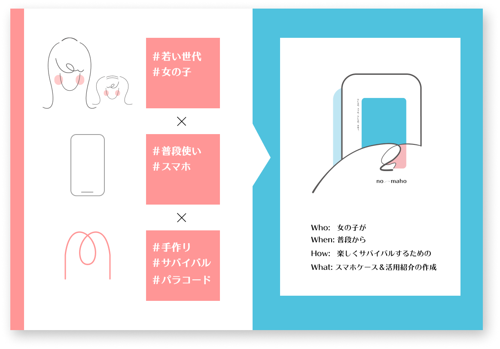

ノーマホは、「女の子が普段から楽しくサバイバルする」ためのコンテンツです。
備えが大事、明日は我が身…そんなこと、分かってる。
だけどボウサイって、なんだかダサい、つまらない。
「毎日持つべき非常品」って…私が握りしめてるの、スマホくらいなんだよなあ。
お母さんと、姉妹と、友達と。
今年こそ、話し合うっていっても…どうすればいいのか、わからない。
…でも、きっと。
災害は、夢物語じゃないから。サバイバルに、魔法はないから。
魔法のように可愛く楽しく、魔法よりも真剣に。
「もしも」をもっと、確実に。いつものスマホを、もっと「もしも」に。
もしものスマホ。もしもの魔法。
ノーマホで、始めよう。
ノーマホで、考えよう。
ターゲット
ノーマホのターゲットは、
サバイバルや防災に「興味はある」けど「ちょっとメンドイ」
…そんな若い女性や、おませで賢い女の子・親子です。
このような人たちの防災意識を高め、
「自分で使え、考えられる」「普段から触れられる」
そんな、新鮮なサバイバルデザインを目指しています。
生活必需品・憧れ品である「スマホ」をキーとし、新たなコンテンツ・世界観を編み出しました。
問題定義
このようなターゲット設定を行なった理由は、「サバイバル」に関する問題定義にあります。
サバイバルのデザインをするにあたり、まずは近年の防災に関する傾向を調べてみました。そこで目についたのは、次の３つ。
「若い女の子や子供」へのアプローチが、重要視されているのです。
1.
若い世代
若い世代の防災意識が、必要とされています。
災害への備え・共助にとって、力強い若者の存在は欠かせません。しかし「防災はダサい・面倒」というイメージも強いとされ、若い世代が立ち上げた「防災ガール」やスマホゲーム型避難訓練・「LUDUSOS（ルドゥオス）」の活動が注目されています。
http://www.bousai.go.jp/kaigirep/hakusho/h28/honbun/1b_1s_01_05.html
18歳に向けた防災意識調査では、災害への不安を感じづらい一番の理由として「自分ごととして実感できない」という理由が挙げられていました。確かに私自身も、震災・災害の多い中で生きているにもかかわらず、どこか遠い出来事のように感じ、他人事のように捉えていました。ギクリ。
参考：18歳意識調査「第11回 – 災害・防災 -」要約版
https://www.nippon-foundation.or.jp/app/uploads/2019/03/new_pr_20190305_02-1.pdf
2.
親子の認識
また防災について、親子での認識のズレ・すれ違いも指摘されていました。
子どもの防災に関する意識調査では、「子供と防災について話し合えている家庭」はわずか約６％とされています。さらに家庭で行っている防災対策と、子供が知っている防災知識には、ズレが生じているのだとか。せっかく家庭で行っている非常食の備えについて、知らない子もいるようです。
| 家庭で行っている対策 | 子供が知っていること |
|---|---|
| 非常食の備え | 地域や家族での 避難場所について |
参考：株式会社バンダイ 子どもの防災に関する意識調査（2019）
https://www.bandai.co.jp/kodomo/pdf/question253.pdf
3.
女性の危険
災害時の視点問題の一つとして、女性視点の少なさも目立ちました。下着や着替えなどでの苦労や食事への関心に加え、対策本部の女性割合が極端に少ないことも指摘されています。
参考：
JICA“女性の視点に立った防災”が必要 ： 藤原しおり（元ブルゾンちえみ）さんたちと考える（2021）
https://www.jica.go.jp/topics/2021/20210408_01.html
価値提供
このような気づき・問題を踏まえ必要だと感じたのは、「若い世代」や「女性・女の子」にとって、より身近で楽しいサバイバルコンテンツ。
これまで考えられていた「サバイバル」よりも、もっと日常に寄り添い、もっと親しみたくなる！そんなコンテンツを作りたいと考えました。
そこで浮かび上がった共通項が…そう。毎日使う、 スマホです。
若い世代にとって、日頃のお供はスマホ。お財布にも鍵にもなりうるスマホは、現代の貴重品です。
また子供が緊急時に持ち出すもの１位も、携帯電話でした。スマホ型のおもちゃも多いことから、子供にとってもスマホは欠かせなく、かつ憧れの存在だと認識。
ここから構想を膨らませ、
このような要素を掛け合わせ、生まれたコンテンツが「ノーマホ」です。
若い世代・女性が防災へ主体的に取り組めるよう、これまでとは違う視点で、もっと気楽な気持ちで、可愛くサバイバルを捉えたい。
そんな想いから、「もしものスマホ、もしもの魔法」というコンセプトを構成しました。
ノーマホそのものが防げる災害は、そう多くありません。しかしノーマホの作成に向き合うことは、防災について考える新たなきっかけになるのではと考えています。
以上３つの内容から、
「ターゲットが防災に関心をもち、自分事化し、情報を応用していく」
という機会・価値の提供を目指します。
ブランド
ノーマホのキャッチコピーは、
「もしものスマホ。もしもの魔法。」 です。
ターゲットや背景に合わせ、以下のようなコンセプトで名前とロゴを作成しました。全体のデザインや内容も、ターゲットを意識しています。
親子で、姉妹で、女子会で！
可愛く楽しく真剣に、スマホで始める「もしもの」話。ノーマホで、始めよう。